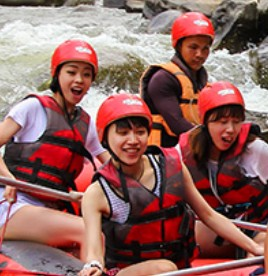

Experience the Thrill of the River with Us.



Experience the Thrill of the River with Us.
Founded in 2005, Utah Rafters began with a group of passionate river enthusiasts eager to share the thrill of whitewater rafting with others. What started as a small operation on the Provo River has since grown into one of Utah's leading rafting companies, offering guided trips on several of the state's most iconic rivers.

Where Mermories Are Made